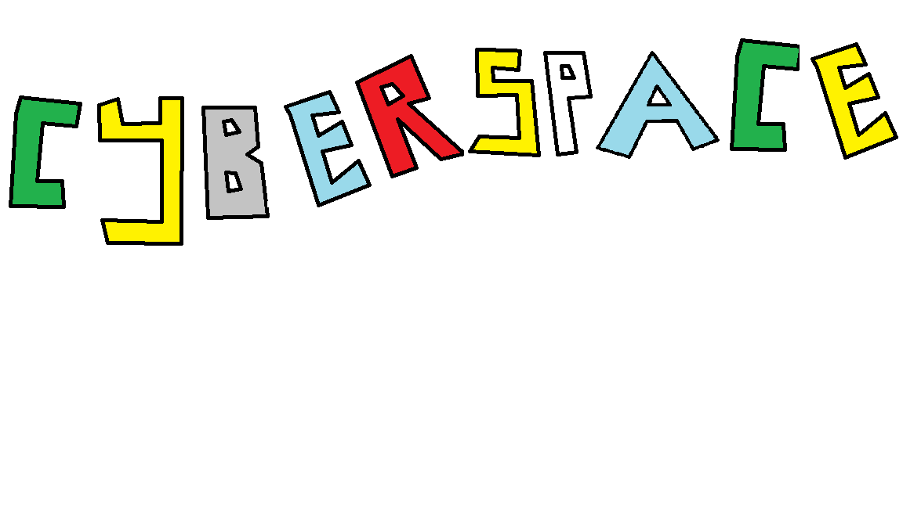
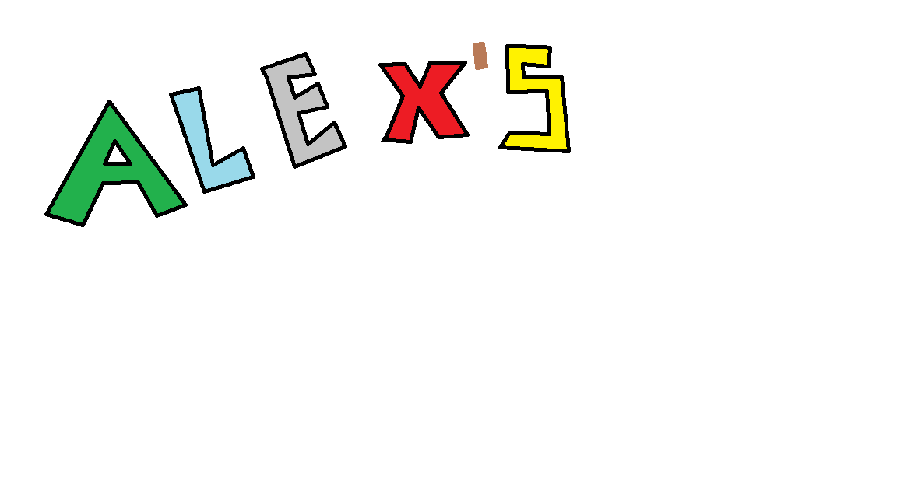
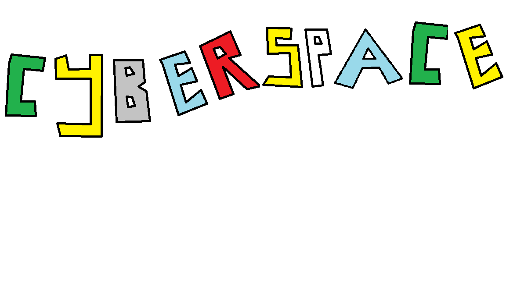
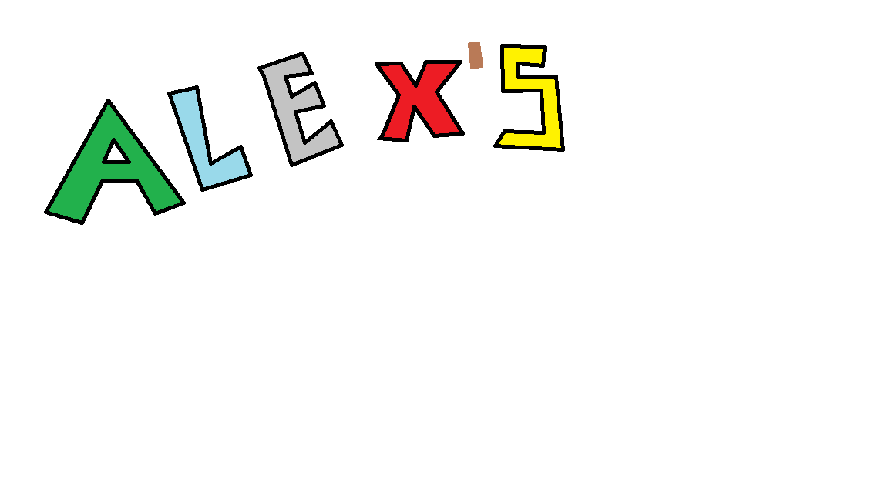

Welcome to my Space on the Web!
Hello there visitor! You might have noticed the unique aesthetic of this site. It's a nod to the Y2K
aesthetic, a time when the Internet was
a lot more fun and whimsical. I've always loved that era of design, and I wanted my corner of the web to
reflect that.
On this website, you'll find more information about mz professional life and my little hobbies ! :)
But that's enough about me for now. Take a look around, and feel free to reach out if you'd like to chat, collaborate, or just want to say hello!